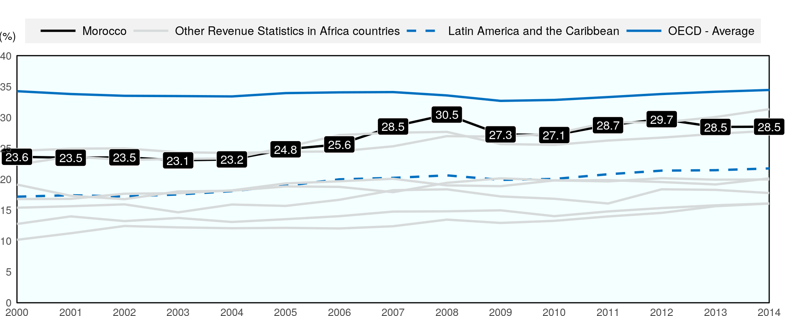
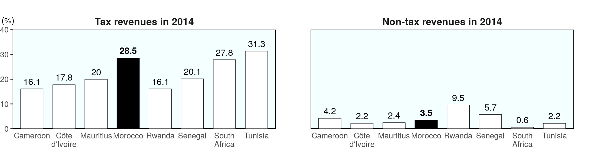
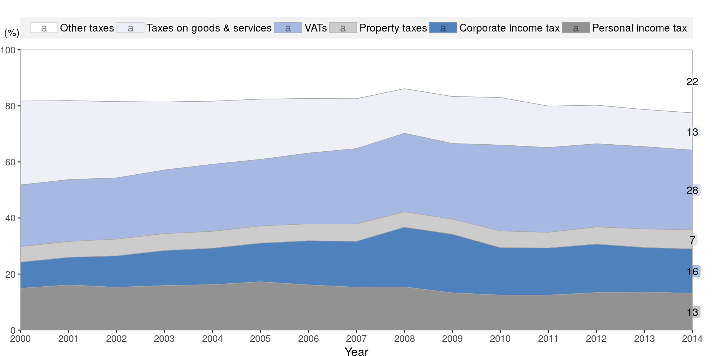
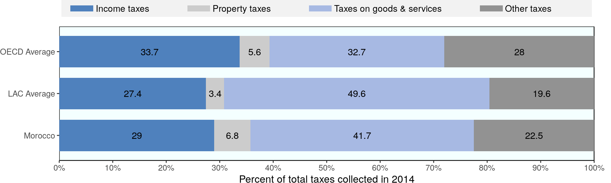

Revenue Statistics in Africa 2016 - Morocco
Tax-to-GDP ratio over time
The tax-to-GDP ratio (total tax revenue as a % of GDP) in Morocco increased by 4.9 percentage points between 2000 and 2014, from 23.6% to 28.5%.

Tax-to-GDP ratio by main types of tax revenues
The total tax-to-GDP ratio for Morocco increased by 4.9 percentage points between 2000 and 2014. Over this period, the tax revenue category with the highest growth was VATs that displayed an increase of 2.9 percentage points of GDP. On the other hand, the tax revenue category with the lowest growth was taxes on goods and services outside of VATs that decreased by -3.3 percentage points over the same period.
| Morocco | OECD average | ||||||
| 2014 | 2014 | 2013 | 2009 | 2000 | 2000-14 | 2013 | |
|---|---|---|---|---|---|---|---|
| Total tax ratio | 263566 | 29 | 28 | 27 | 24 | 4.9 | 34 |
Ratios of tax and non-tax revenue to GDP, 2014
In 2014, the tax-to-GDP ratio for Morocco was 28.5%, which is the second highest among the eight African countries featured in Revenue Statistics in Africa. The ratio of non-tax revenue to GDP for South Africa was 3.5%, which is the fourth highest.

Tax structure
Evolution of tax structure from 2000 to 2014
The tax structure, i.e. the tax as a proportion of total tax revenue, in Morocco has evolved since 2000. The tax revenue category that changed the most was goods and services taxes outside of vat which has changed from 29.9% of total taxation in 2000 to 13.3% in 2014.

Tax structure compared with LAC and the OECD
Income taxes in Morocco are higher than the LAC average, but lower than the OECD average as a percent of total taxation. Social security contributions (SSC) are a major component of OECD and LAC countries’ revenues but among the Revenue Statistics in Africa countries, this is only true for Morocco and Tunisia.
The proportion of taxation devoted to goods and services taxes is lower than the LAC average, but higher than the OECD average. Property taxes are higher than both the LAC and OECD averages.

Source: OECD/ATAF/AUC Revenue Statistics in Africa 2016
http://www.oecd.org/ctp/revenue-statistics-in-africa-9789264253308-en-fr.htm